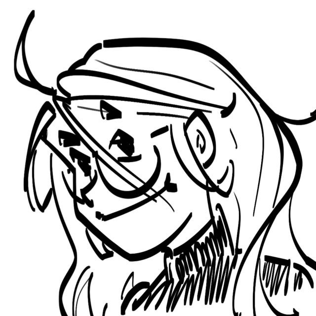

This individual is a human,
the sole extant species of the genus Homo.
It is unusually capable of the language
you are prone to daily.
In its words,
"Hi, I love birds but can't code.
This page is not about me.
Go read about the birds."
Who doesn't want shiny Pokémon? Who doesn't want to say "I have found
a rare bird"? But I won't do rarity justice if I just slapped on a few
stars and called it a day.
Rarity is not a unitary construct. I have seen certain species in
different parts of the world, and they are certainly not equally
abundant in these areas. Some birds are locally abundant but globally
less so. Others are not abundant throughout their extensive range.
Vagrants that attract hundreds of twitchers, might be garden birds
elsewhere. The sampling context also matters: it would be much harder
to find a skulky species by mere observation than say, mist net
trapping. Many species are also more easily observed at particular
times of the year and times of the day.
It may be best to refrain from describing a species as rare. Instead,
rarity is relevant to events, i.e. it is rare to observe this
bird at this place at this time, which isn't as exciting, or as easy
to capture with a linear scale.
I don't exactly consider myself a "bird photographer". I feel like all I need is a sharp, ID-able shot with as much of the bird as possible, and anything more is a bonus. It bores me to spend hours at a single spot to get the perfect shot, or simply waiting for the target bird to appear. Alas, I do realise that is the only way to see certain species, so I begrudgingly show up and stand. Nonetheless, I have been learning camera techniques, though obviously with much less enthusiasm than studying a field guide.
I am quite particular about colour. I dislike overly saturated
colours, and lean more towards subtler tones. For instance, instead of
the bright red of a Scarlet Tanager #F0190A, I prefer the more muted,
variegated red of a male
Crossbill
#CF584A. Green broadbills #0DF705 are certainly cool, but I can't
stare at them for more than a few minutes. And yet my heart flutters
every now and then for the green rump of a
Chaffinch #AABA43. As such,
my favourite birds are often coloured to blend in; some could even be
described as cryptically plumaged.
My favourite birds come in two major categories. The first are
extremely rotund species, either long-tailed or almost tailless. This
includes things like
Long-tailed Tit,
Dartford Warbler,
Vinous-throated Parrotbill, cupwings, and fairywrens. The second group
of birds have bizarre appearances and behaviours, but if you think
about it seriously it kind of makes sense. This includes things like
bittern, nightjar, grasshopper warbler, and woodcock. And of course,
the are overlaps between these two categories, and that makes my
favourites of favourites.
Bearded Reedling is a strong
contender with its tiny beady eyes and max fluff in winter. And then
there's Red Grouse, which I also have a knack for mimicking the calls
of. I'm still deciding which HK birds I like the most, since most of
them are not particularly round due to the hot weather...